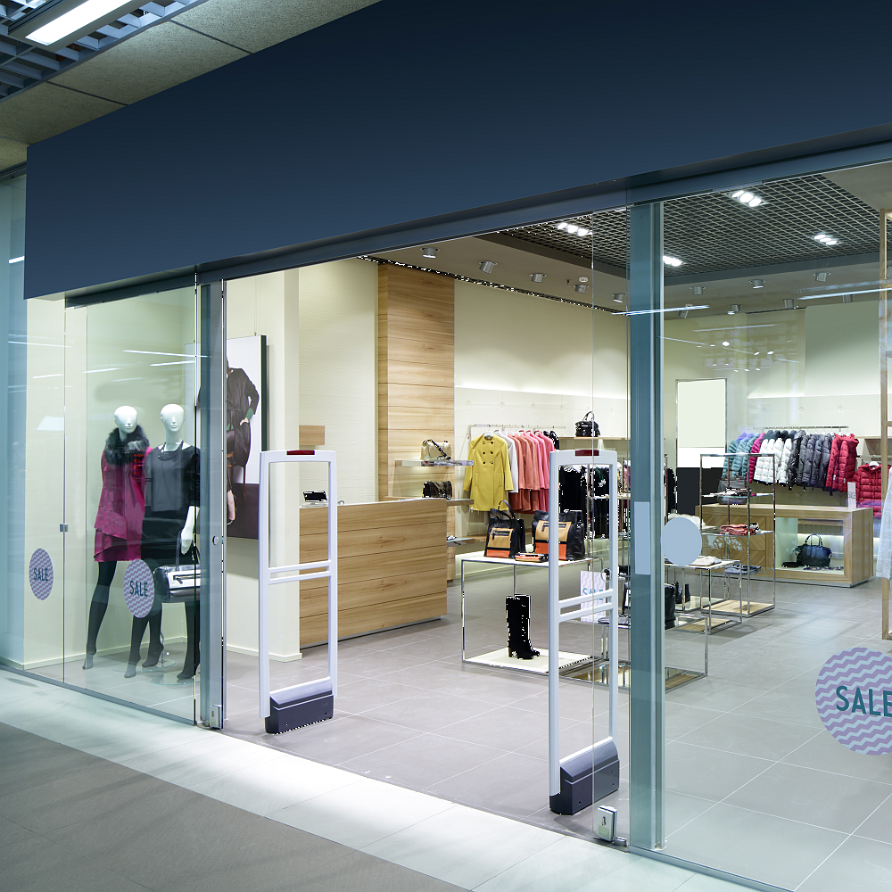
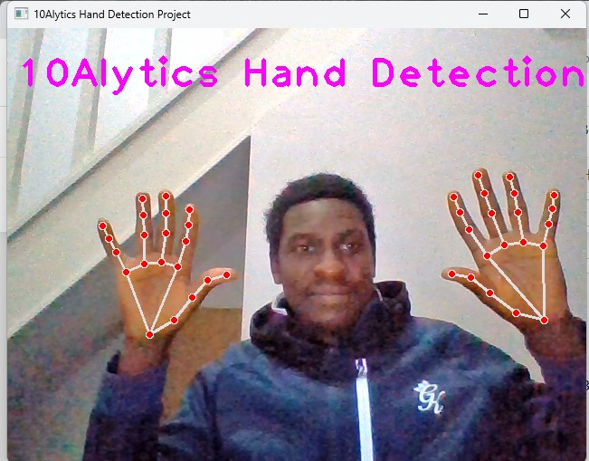

In this machine learning project, I developed a robust customer churn prediction system by leveraging advanced analytics and
machine learning techniques on available customer data in order to accurately forecast customer churn and implement targeted retention initiatives
using features extracted from the company database which included features as gender, customer ID, tenure, streaming TV, online service,
dependents, partners and other relevant information.

This project leverages the power of supervised machine learning techniques in tackling flight delays
as it leads to inconvenience to passengers, financial losses for airlines and operational challenges
for airports. Python Language was utilized to perform EDA and build Models to accurately forecast instances of delay and airport with efficient operation .

The company had discrepancies in their return rate and were losing customers. As an experienced Data Analyst, I needed to help them better understanding
their data, get valuable insights and give them recommendations to help them reach their targets and also acheive a target return rate of 8% for the coming year.
I used Tableau to uncover the reason behind returns of product from customers.

This is an e-commerce company that is dedicated to transforming online shopping experiences and specializes in cutting-edge
solutions by harnessing technology to redefine customer engagement. I leveraged unsupervised machine learning algorithm to analyze
diverse data points to identify nuanced customer segments to enable the business tailor their products, services and marketing strategies
to specific customer needs, thereby fostering stronger customer relationship and increase overall business success. I employed clustering
algorithms and dimesionality reduction techniques (Principal Component Analysis) to perform this process.

The business request for this data analytical prioject was an executive sales report for the sales manager. I worked on
this project using Microsoft SQL Management Studio to extract, and clean the data and PowerBI to create interactive dashboard
for data visualization. I was able to uncover hidden insights and tell useful story on the sales report based on the dashboard created. .

Computer vision enables computers to interpret and understand the visual world. This project focuses on developing
algorithms and systems that can automatically process, analyze, and make sense of visual information from the world, such as images and videos.
I leveraged MediaPipe for hand detection and OpenCV for image processing and feature extraction, the MediaPipe was chosen for its real-time performance.
The purpose of this project was to see how the computer captures our faces, eyes and smiles in real time and see other areas it can be applied.
I created an Excel Dashboard to gain deeper understanding of the patterns, trends and characteristics of accidents across different states,
county and cities. The dashboard provides key insights into monthly trends, accident severity, cities with accidents and states with accidents per time to avoid cities prone to accidents,
construct traffic lights or make traffic laws in cities with high accident tendencies and so on.
{kind=link}